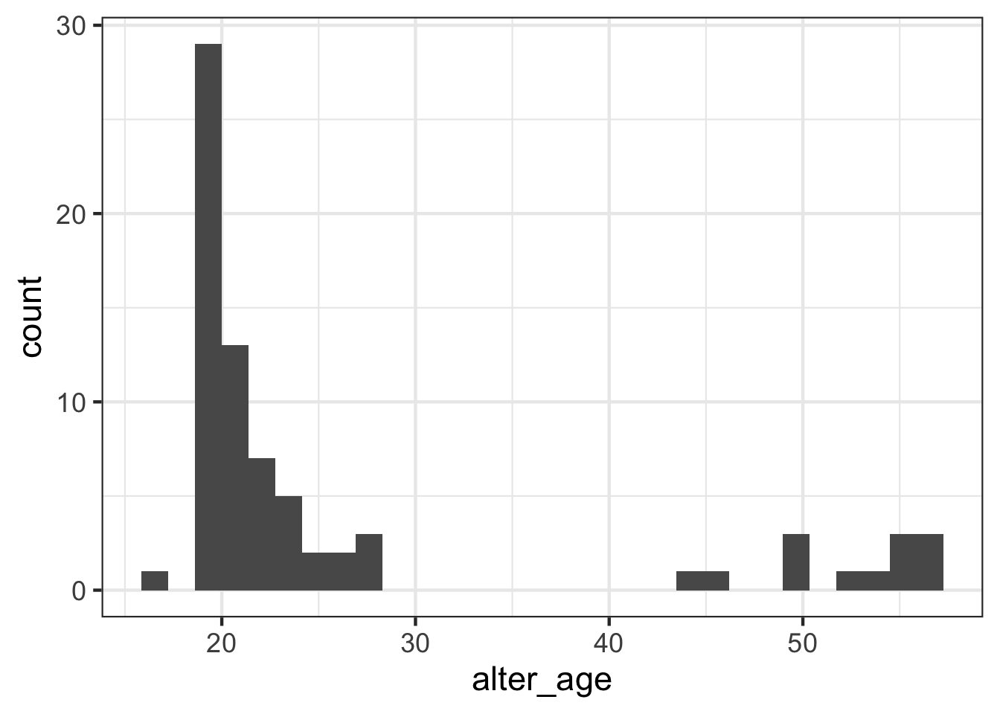
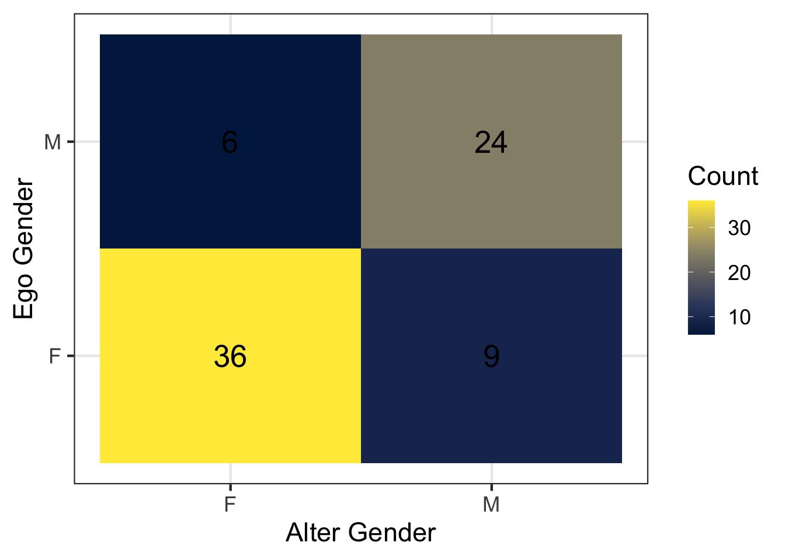

# load packages
library(tidyverse)
# set theme for plots
theme_set(theme_bw(base_size = 17))Social Networks (Soc 321k)
Overview of Lab 3
Welcome to R Lab 3! In this lab, we will complete two different exercises:
Explore how network structure shapes disease spread using simulated data in the Shiny app (SimNetwork).
Investigate patterns of AI use using the survey data collected in class.
Each exercise will have a few questions for you to complete. Please complete these questions and upload the .qmd file to the corresponding lab assignment to Canvas to receive full credit for the lab.
Exercise 1: SIR Models on Networks
In Exercise 1, we are interested in how network structure shapes disease spread. We explore a Shiny app demo’d in class called SimNetwork developed by Alison Wu:
https://github.com/alisonswu/shiny-SimNetwork
This interactive app allows you to:
Select different network structures
Adjust disease parameters (e.g., transmission rate, recovery rate)
Visualize SIR-like infectious disease dynamics on networks
To launch the app locally, you will need to run this code:
## uncomment lines below to install and run the shiny app
# install.packages("shiny")
# library(shiny)
#
# runGitHub("shiny-SimNetwork", "alisonswu")runGitHub() is a function from the shiny package that allows us to run a Shiny app directly from a GitHub repository.
This app is divided into three main steps:
- Choose a network structure
Under “Step 1: Choose Network”, you select
A network type among options
Scale Free,Small World,Binary Trees, andLatticefrom the dropdown menu.Population size, which determines how many individuals (nodes) are included in the network.
- Choose disease parameters
Under “Step 2: Choose disease dynamic”, you can alter the following parameters:
Number of Initial Infections: the number of individuals who are infected at time t = 1.Infection Probability: the probability (ranging from 0 to 1) that the infection transmits across a connection.Infection Duration: how long an individual remains infected before transitioning to the recovered state.
- Run the simulation
Click the simulate button to begin the simulation.
The output is displayed in two main tabs:
- Network visualization
This shows nodes (individuals), edges (connections), color-coded health status including susceptible (green), infected (red), recovered (yellow).
You can move the time slider to observe how the infection spreads step by step. You can also click start/pause animation (Step 4) to automatically play or pause the dynamic process.
- SIR plots (line plot and stacked area plot)
They show the population-level dynamics over time: the percentage of Susceptible (S), the percentage of Infected (I), the percentage of Recovered (R). The line plot emphasizes trends and infection peaks, while the stacked area plot shows how the population composition changes over time.
Exercises
1.1: Run the simulation using different network structures. Set the infection probability to p = 0.1. Keep all disease settings the same. Which network structure produced the largest outbreak? What features of that network’s structure might make disease spread more easily?
Small world networks produced the largest outbreak. These networks combine dense local clustering with a few long-range “shortcut” ties, which dramatically shortens the average path between any two nodes. That combination lets infection spread efficiently within neighborhoods while also jumping quickly across the network.
1.2: Change one parameter at a time while keeping the network type set to “small world” and all other settings the same. After each change, run the simulation and observe the results. Which of the three parameters, when increased or decreased, make it more likely that the entire population becomes infected? List each parameters and briefly explain why increasing/decreasing them leads to a larger outbreak.
Decreasing population size makes it less likely that the entire population becomes infected, because smaller networks saturate quickly and there are fewer nodes for the infection to miss. Increasing the number of initial infections makes a full outbreak more likely, since multiple seeds launch separate transmission chains simultaneously and are less likely to all die out by chance early on. Increasing the infection probability also makes a full outbreak more likely, because each contact between an infected and susceptible node is more likely to successfully transmit, raising the effective reproduction number above the threshold needed for widespread spread.
Exercise 2: Homophily Survey
Now we’ll turn to analyzing data from our homophily survey. In this survey, we collected information about an ego and five of their discussion partners (alters). All nonsensical responses and missing data have been dropped. We’ll read this file in from where it is stored (on Github) using the read_csv() function.
The data is formatted in long format, where each row represents a different alter. This means that we will have 5 rows for each ego.
## read in survey responses
responses <- read_csv("https://raw.githubusercontent.com/caseybreen/networks_course/main/data/homophily_survey.csv")
## print out survey responses
responses# A tibble: 75 × 13
ego_id date ego_gender ego_age ego_classyear ego_origin ego_ai alter_id
<dbl> <chr> <chr> <dbl> <chr> <chr> <chr> <dbl>
1 1 2/26/2026 F 19 Sophomore Austin No 1
2 1 2/26/2026 F 19 Sophomore Austin No 2
3 1 2/26/2026 F 19 Sophomore Austin No 3
4 1 2/26/2026 F 19 Sophomore Austin No 4
5 1 2/26/2026 F 19 Sophomore Austin No 5
6 2 2/26/2026 M 20 Junior Rest of US No 1
7 2 2/26/2026 M 20 Junior Rest of US No 2
8 2 2/26/2026 M 20 Junior Rest of US No 3
9 2 2/26/2026 M 20 Junior Rest of US No 4
10 2 2/26/2026 M 20 Junior Rest of US No 5
# ℹ 65 more rows
# ℹ 5 more variables: alter_classyear <chr>, alter_gender <chr>,
# alter_origin <chr>, alter_age <dbl>, alter_ai <chr>Let’s look at the columns:
ego_id: A unique identifier for each survey respondent (the ego in the ego network). Each respondent will appear five times in the dataset, once for each person they listed.
date: The date the survey response was submitted.
ego_gender: The gender of the respondent completing the survey.
ego_age: The age of the respondent.
ego_classyear: The respondent’s class year (Freshman, Sophomore, Junior, or Senior).
ego_origin: Where the respondent is from (e.g., Austin, Rest of Texas, Rest of the United States, or Rest of the world).
ego_ai: Whether the respondent reports having used AI (e.g., ChatGPT) on coursework in a way that violated course rules in the past 12 months.
alter_id: A numeric identifier for each discussion partner listed by the respondent. Each respondent could list up to five people, so this variable ranges from 1 to 5.
alter_classyear: The class year of the discussion partner listed by the respondent (if they are a student).
alter_gender: The gender of the discussion partner listed by the respondent.
alter_origin: Where the discussion partner listed by the respondent is from.
alter_age: The age of the discussion partner listed by the respondent.
alter_ai: Whether the respondent believes that the discussion partner person has used AI (e.g., ChatGPT) on coursework in a way that violated course rules in the past 12 months.
Warm-Up Exercises
Recall that in Lab 2, we did some simple explorations of this dataset. We examined the age and gender distributions of egos and alters, and we looked at homophily in characteristics, such as age, gender, and year in college, between egos and their discussion partners.
a) Create a histogram plot of the ages of our discussion partners in the following code chunk. Use the ggplot() and geom_histogram commands.
## make histogram
responses %>%
ggplot(aes(x = alter_age)) +
geom_histogram()
b) Examine homophily with respect to gender in the discussion networks by completing and running the code below. Do you see evidence of gender homophily?
## tabulate discussion partners gender
gender_tabulated <- responses %>%
count(ego_gender, alter_gender)
## plot discussion partners gender
gender_tabulated %>%
ggplot(aes(x = alter_gender, y = ego_gender, fill = n)) +
geom_tile() +
geom_text(aes(label = n), size = 7) +
scale_fill_viridis_c(option = "cividis") +
labs(
x = "Alter Gender",
y = "Ego Gender",
fill = "Count"
)